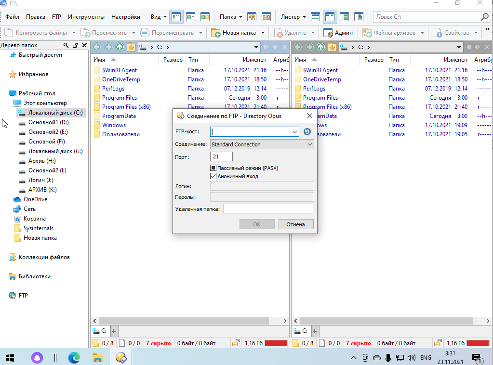

Directory Opus - Коммерческий файловый менеджер. Был впервые выпущен в 1990 году как простой двухпанельный файловый менеджер для компьютеров.
Мощный и надежный файловый менеджер с большим набором удобных и функциональных опций, обеспечивающих легкую работу с файлами и папками, сохраненными на ПК.
Утилита полностью реализует возможность работы с файлами, в том числе: перемещение, копирование, преобразование, удаление. Расширенные функции поиска и переименования файлов, их синхронизации и поиска возможных копий по дате, размеру, расширению и другим свойствам.
Основные возможности:
- Гибко настраиваемый интерфейс
- Полная совместимость с UAC
- Поиск по настройкам программы с подсветкой результатов
- Мощный поиск с возможностью создания своих фильтров
- Вставка текста и изображений из буфера обмена в виде файлов
- Загрузка изображений на сервисы Flickr и ImageShack
- FTP-клиент
- Встроенный скриптовый язык
- Просмотр и редактирование метаданных файлов
- Встроенные инструменты, включая синхронизацию, поиск дубликатов файлов, конвертер и загрузчик изображений
При первом запуске программы нас встречает стартовое окно, где мы можем выбрать Новый листер, свойства, изменить внешний вид или открыть руководство по эксплуатации ПО..
После нажатия "Новый листер" открывается основное окно файлового менеджера
Поиск файлов с параметрами
Окно параметров
Окно инструментов
Подключение по FTP
